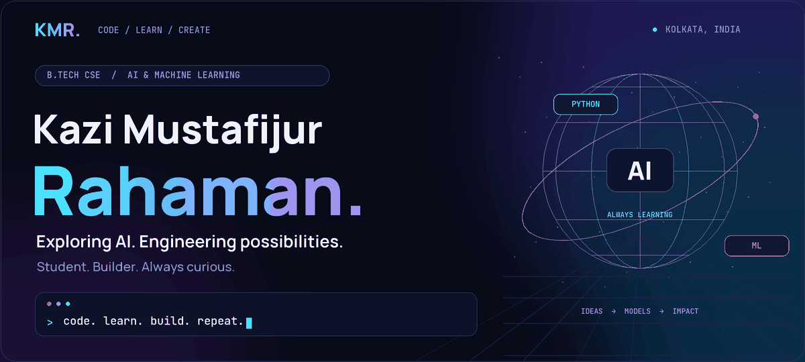
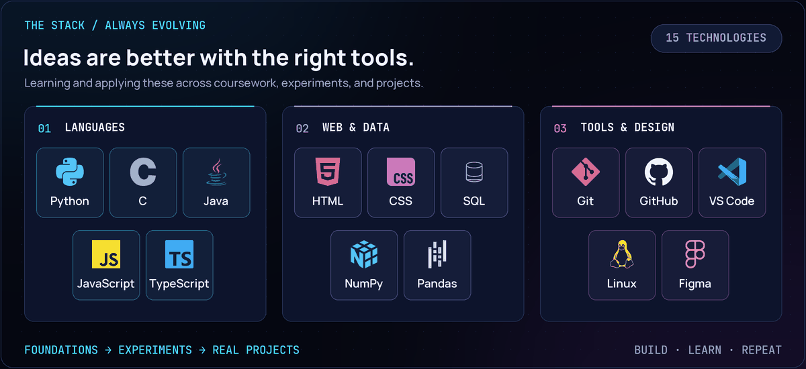
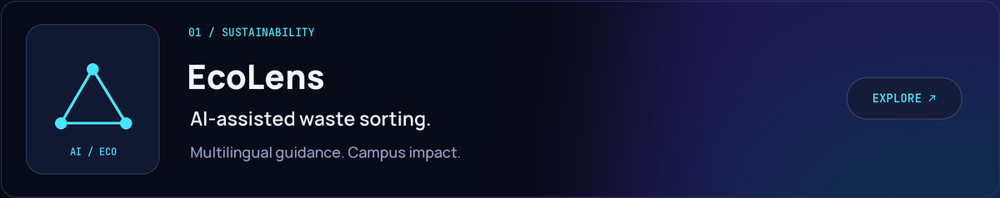
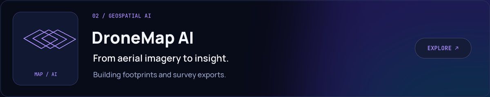
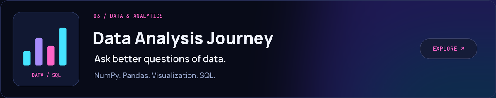
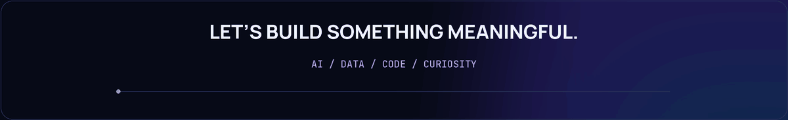

About / Stack / Stats / Activity / Projects / Connect
About me
I'm Kazi Mustafijur Rahaman, a B.Tech Computer Science Engineering student specializing in AI/ML, based in Kolkata, India.
I learn by building: from programming and data structures to web applications, data analysis, and AI experiments. I'm interested in the point where a useful idea becomes something people can actually use.
- Learning: stronger programming fundamentals, problem solving, and machine learning concepts.
- Building: practical projects that connect code, data, and real-world problems.
- Working toward: becoming an AI/ML engineer with strong engineering foundations.
Tech stack

Tap to explore the toolkit
| Area | Technologies I'm learning and using |
|---|---|
| Programming | Python · C · Java · JavaScript · TypeScript |
| Web | HTML · CSS · JavaScript · TypeScript |
| Data and analysis | SQL · NumPy · Pandas · Data visualization |
| Development | Git · GitHub · VS Code · Linux |
| Design | Figma |
These reflect coursework, practice, and project work; I'm continuing to develop depth across them.
GitHub stats and grade
Languages by repo and by commit
Commit hours and streaks
Contribution timeline
Tap to explore the stats and their sources
- By repo: the original repository-language distribution card.
- By commit: the original commit-language distribution card, kept separate from code-byte statistics.
- Grade card: the provider-calculated rank, refreshed with its actual statistics.
- Activity: commit hours use Asia/Kolkata (UTC+05:30); the streak card uses its own provider calculation.
- Counts: different services have their own scopes and caches, so totals can differ between cards.
Featured work



Let's connect
I'm happy to connect with fellow learners, exchange ideas, and explore thoughtful technology projects.
